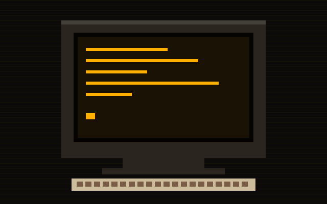

Acervo digital · 1975–1995
Museu do Bit
Quinze máquinas que ensinaram o mundo a conversar com computadores: das chaves do Altair às texturas do PlayStation. Entre, aperte as teclas e escute o som dos modems.

0Máquinas no acervo
0Anos de história
0Fabricantes
0Micros brasileiros
Hoje na vitrine
Ver o acervo completo →
Peças em destaque
Para os curiosos
Terminal do curador
Digite help e descubra o que dá para fazer. Tente boot.
Quiz
Qual máquina é você?
Quatro perguntas rápidas e o museu escolhe a peça que combina com o seu jeito.